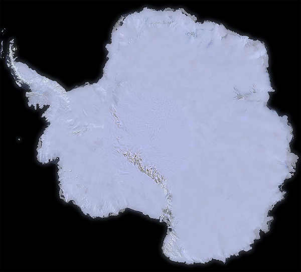
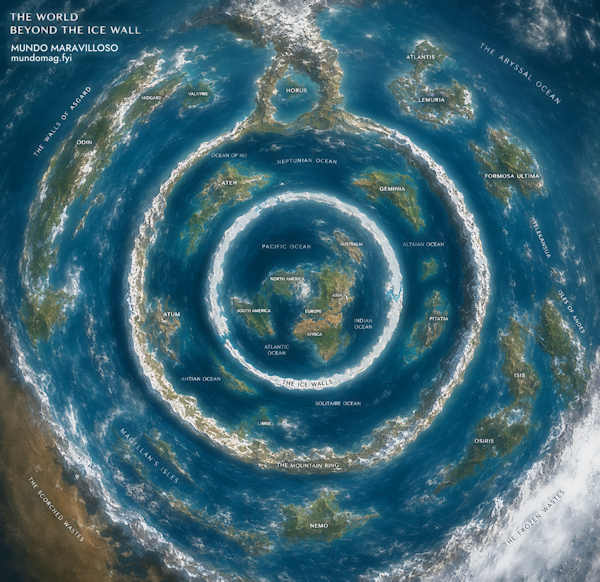

En los últimos años ha circulado en internet la idea de que, más allá del muro de hielo antártico, existen continentes ocultos: Atlántida, Hiperbórea, Agartha, reinos egipcios olvidados. Es la Tierra Extendida, un mito que combina mitología clásica, diarios apócrifos atribuidos al almirante Richard E. Byrd y una desconfianza genérica hacia los mapas oficiales.
No es lo mismo que el terraplanismo, ni que la vieja teoría de la Tierra Hueca del siglo XIX — aunque toma piezas de ambas. Tampoco es un mito antiguo puro, como la Atlántida de Platón. Es un ensamblaje moderno, nacido en foros y algoritmos de video, que viste de secreto geográfico lo que ya fue cartografiado, fotografiado y perforado por la ciencia.
Este artículo separa lo verificable de la especulación: qué dice exactamente la teoría, qué evidencia científica la contradice punto por punto, y por qué —a pesar de eso— sigue creciendo.
Qué es exactamente la Tierra Extendida
La Tierra Extendida plantea que existen tierras o continentes ocultos más allá de lo cartografiado — normalmente detrás del supuesto muro de hielo antártico. Cubre versiones que mezclan mitología (Atlántida, Hiperbórea, Agartha) con conceptos científicos distorsionados, y a menudo se solapa con la Tierra Hueca (un interior con luz propia) o la Tierra Plana (un disco rodeado de hielo).
Origen y línea de tiempo
El concepto de tierras ocultas en los confines del mundo tiene raíces antiguas —Atlantis, Thule— pero como teoría conspirativa moderna, sus primeras apariciones claras son del siglo XX, alimentadas por la era espacial y el auge de los movimientos pseudocientíficos.

Las afirmaciones principales
Los proponentes de la Tierra Extendida repiten un puñado de reclamos, casi siempre sin fuentes verificables:
{kind=link}

La evidencia científica en contra
La geología, la geofísica, la cartografía y la sismología ofrecen información contundente que invalida todas las versiones de la Tierra Extendida.
👤Consenso científico · Glaciología y geofísica polar"Toda fuente oficial —NASA, USGS, BAS, agencias polares— coincide: no hay evidencia de tierras ocultas. La ciencia ha invertido décadas en cartografiar el suelo antártico incluso bajo el hielo."
De teoría geográfica a narrativa ufológica
Desde alrededor de 2020, la Tierra Extendida dejó de ser solo una hipótesis geográfica. Se fusionó con la ufología contemporánea, la teoría de los antiguos astronautas y los fenómenos aéreos no identificados (UAP), convirtiéndose en una explicación global sobre el origen de inteligencias no humanas.
En esta variante, los "extraterrestres" ya no vendrían del espacio: habrían coexistido siempre con la humanidad en regiones ocultas de la Tierra. Se afirma que muchos UAP —y USO, sus equivalentes submarinos— emergerían desde el océano o desde la Antártida. Ninguna investigación oficial ha establecido ese vínculo. Desde 2023, además, imágenes generadas por IA han contribuido a difundir mapas y ciudades ficticias presentadas como evidencia real.
Por qué se difunde tan rápido
La creencia en la Tierra Extendida opera dentro del marco más amplio de las teorías conspirativas: desconfianza en las élites científicas, necesidad de explicaciones dramáticas y el atractivo de sentirse parte de los pocos que "saben la verdad". Se difunde sobre todo en YouTube, TikTok, Instagram y foros como Reddit, donde canales de pseudohistoria en español mezclan mitos antiguos con conspiración contemporánea.
Las estrategias retóricas son reconocibles: citas distorsionadas ("Byrd dijo en su diario que…"), imágenes sacadas de contexto presentadas como hallazgos, y argumentos que descalifican a la ciencia de antemano ("los científicos mienten para mantener el poder"). Los algoritmos de recomendación hacen el resto, reforzando la burbuja de quien ya empezó a buscar contenido "alternativo".
Cuatro teorías, un mismo patrón
| Teoría | Reclamo central | Estado científico |
|---|---|---|
| Tierra Extendida | Continentes ocultos más allá de la Antártida | ✗ Rechazada — sin datos empíricos |
| Tierra Hueca | Cáscara vacía con civilizaciones internas | ✗ Desmentida — sismología muestra interior sólido |
| Tierra Plana | Disco rodeado por un muro de hielo | ✗ Refutada — astronomía y vuelos espaciales |
| Atlántida y leyendas clásicas | Civilizaciones avanzadas perdidas | ⚠ Mitología — ficción alegórica reconocida como tal |
// Para llevarse de este artículo
- Toda la superficie terrestre, incluida la Antártida, está cartografiada por satélite desde hace casi dos décadas.
- La estructura interna de la Tierra —corteza, manto, núcleo— está medida por sismología independiente en todo el planeta.
- Atlántida es, por reconocimiento histórico propio, una alegoría de Platón — nunca fue presentada como un lugar real por sus creadores.
- La viralidad de un mito no es evidencia de nada, salvo de qué tan bien viaja una historia en redes sociales.
Fuentes
-
ChequeadoEs falso que la Antártida es una "muralla de hielo" alrededor de una Tierra planaAnaliza el viral del muro de hielo y recoge respuestas de glaciólogos sobre la imposibilidad estructural de dicho muro.
-
National Geographic Latinoamérica — Douglas FoxHallazgo impresionante en la Antártida: científicos revelaron un mundo oculto bajo el hieloDescribe los avances en radar y gravimetría para mapear el subsuelo antártico, con hallazgos reales como ríos subglaciales.
-
La Nación — Diego CioccioRichard Byrd: la vida del almirante que originó la insólita teoría de la Tierra huecaRepaso periodístico de los rumores sobre Byrd y el origen de las afirmaciones conspirativas atribuidas a él.
-
NASA Earth Science News — Emily FurfaroHow Do We Know the Earth Isn't Flat? We Asked a NASA ExpertEntrevista con un experto de la NASA sobre cómo se demostró históricamente la redondez terrestre.
-
USGS / NASA — Landsat MissionsLandsat Image Mosaic of Antarctica (LIMA)Fuente oficial del mosaico satelital que cubre la Antártida completa con más de mil imágenes Landsat.
-
Matsuoka, K. et al. — Environmental Modelling & Software 140:105015Quantarctica, an integrated mapping environment for Antarctica, the Southern Ocean, and sub-Antarctic islandsPresenta Quantarctica, un paquete GIS gratuito con 265 capas de datos cartográficos antárticos.
-
NSF — Seismology NewsSeismologists peer into Earth's inner coreNota de prensa sobre un estudio publicado en Nature acerca del núcleo interno sólido de la Tierra.
-
WikipediaAtlantisResumen autorizado de que Atlántida es ficción de Platón, creada como alegoría filosófica.